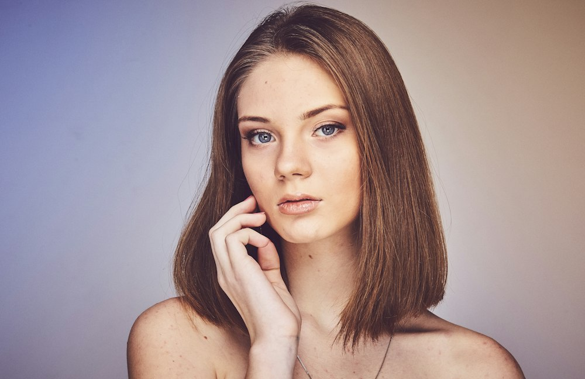
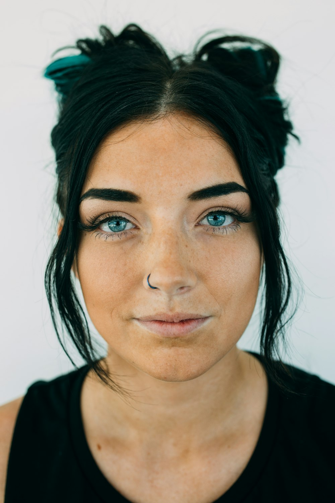
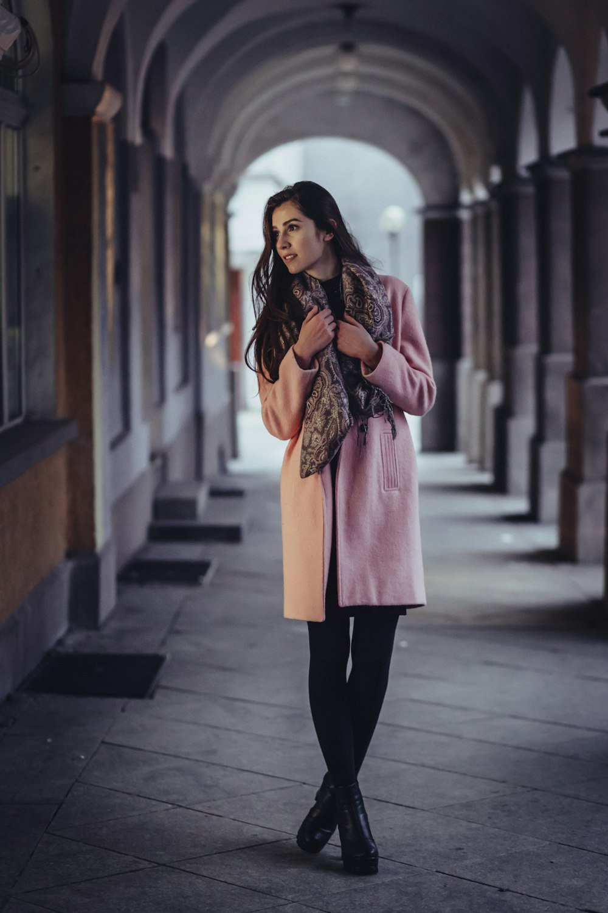
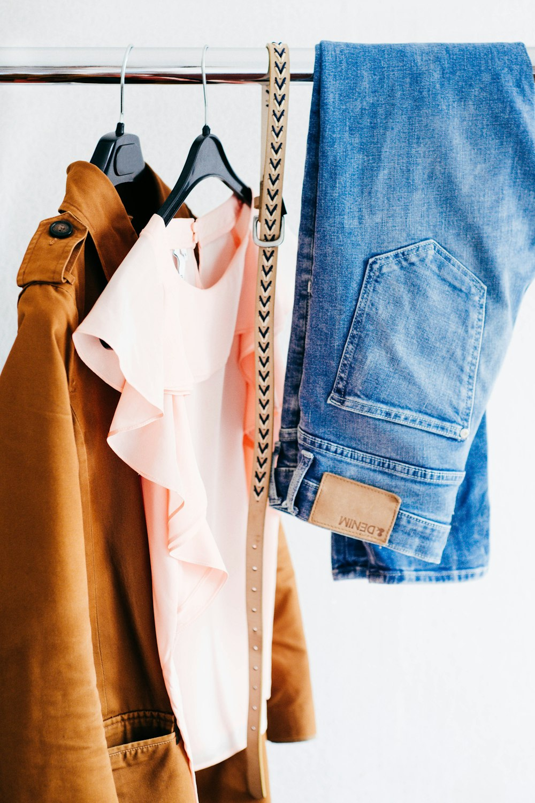
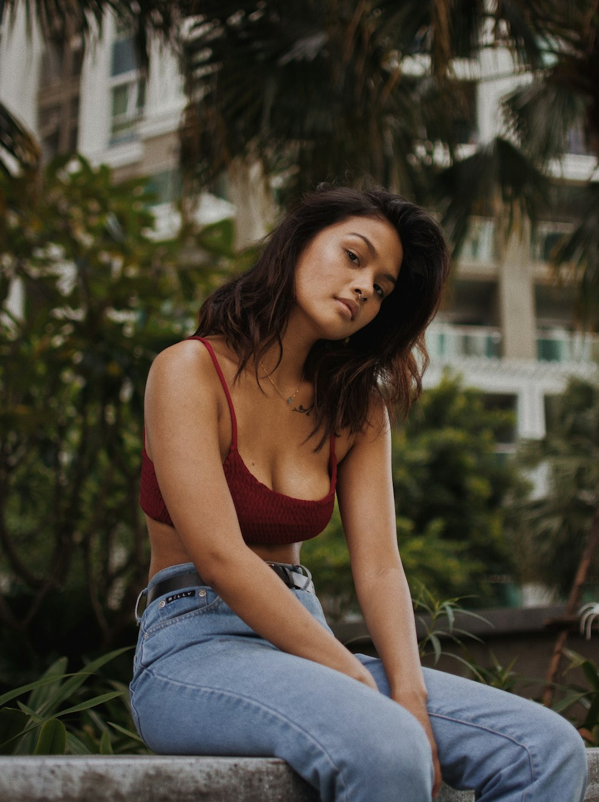
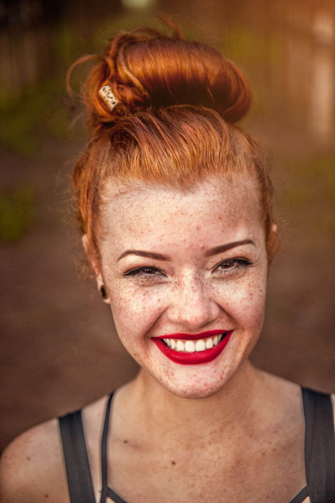
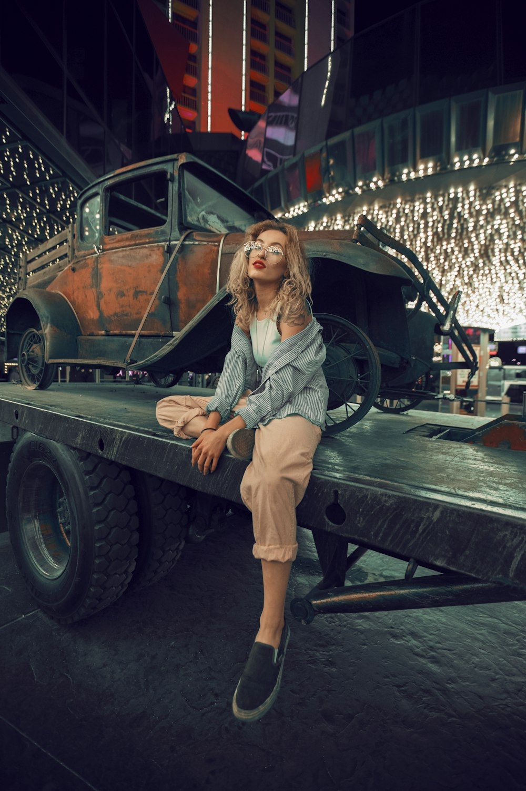

Food & fashion
FilmsTexture, movement and detail — short films for food and fashion, made for screens of every size.
marketing
agency
Dusk, south
october
f 2.8
35 mm
iso 100

We are inspired by people.
Photography, film and social content shaped around people, light and story — honest images for brands that want to be seen as they are.
We work across photography, video production, TV commercials, digital video commercials, event coverage, food and fashion films, and social media management and marketing.



A collection of stories where your brand plays the lead.

We don’t ask you to pose
02We want you to feel calm and natural in front of the camera.
That is when the most alive frames happen. Soft light, natural movement, honest glances — that is where the beauty is.
City, winter
landscape
f 5.6
iso 400
It all starts with a look
ideas, location,
mood,
style
natural,
free,
alive
selection,
editing,
colour

Interior, film
winter
f 2.0
iso 200
Every project — a new story.
We listen, observe, notice. We see what usually hides between movements and glances. A frame is a conversation without words, built on trust and atmosphere.
Not perfect angles, but real feelings — so the images stay warm long after.

Texture, movement and detail — short films for food and fashion, made for screens of every size.
Events documented as they unfold — photo and video that keep the atmosphere of the day, not just the schedule.
TV and digital video commercials — ideas turned into short, precise stories for broadcast and online.
We create:
Photo
Video
Social